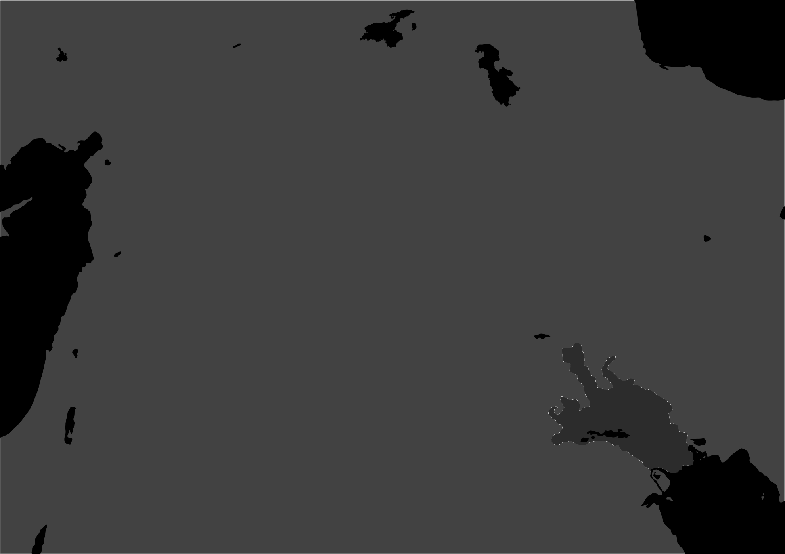
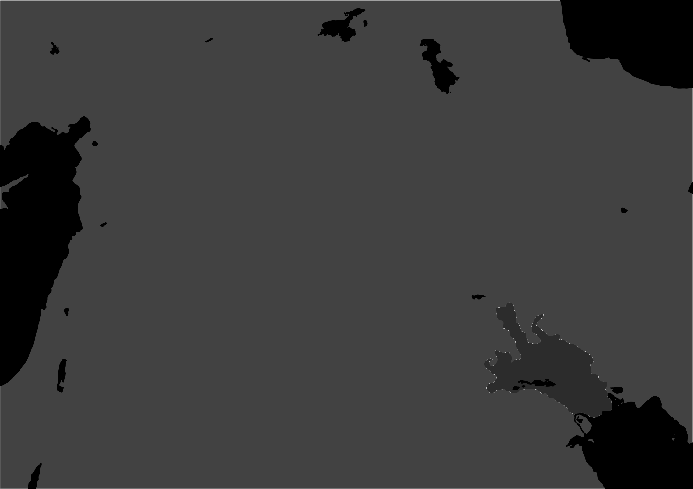

500 Years Before Enheduanna's Birth (c. 2785 BCE – c. 2285 BCE)
- This period saw the continued development and sophistication of Sumerian civilization in Mesopotamia, known for its city-states, such as Ur, Uruk, and Eridu.
- The invention and development of cuneiform writing around 3000 BCE, primarily used for economic transactions, literature, and legal codes, was a significant milestone.
- The tales of Gilgamesh were written around 2150 BCE, contributing to one of the world's first works of literature, «The Epic of Gilgamesh».
During and 500 Years After Enheduanna's Life (c. 2285 BCE – c. 1750 BCE)
- Enheduanna was born around the 23rd century BCE, during the reign of Sargon of Akkad, her father, who established the Akkadian Empire. This empire united the Sumerian and Akkadian-speaking peoples, creating a Semitic-speaking empire.
- The Akkadian Empire was characterized by its administration, bureaucracy, and military, expanding its influence across Mesopotamia and beyond. Sargon's rule was followed by other powerful rulers like Naram-Sin.
- After the fall of the Akkadian Empire, the Sumerian city-state of Ur rose to power around 2100 BCE, marking a period known as the Sumerian Renaissance.
 


